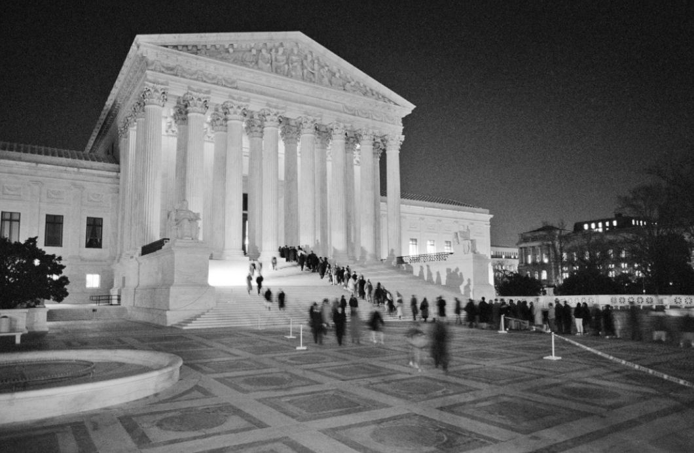

独立后的最初十年，新成立的合众国的部分立法者和领袖们，迫切希望国家的法律制度能远离腐朽没落的欧洲旧制度。从1799年到1810年，新泽西州、肯塔基州、宾夕法尼亚州先后立法，禁止州法院援引英国法院自1776年7月4日之后作出的判决。托马斯·杰弗逊在私人通信里，也支持在美国法院中抛弃英国法的做法。
但是，即便在此时期，美国人对外国法的态度也很骑墙，并非普遍敌视。毕竟，《独立宣言》第一段就谈到“对人类公意的尊重”。《联邦论》也提到过500多个外国地名。早期最高法院的判决中，包含大量对外国法律文献的参考；对拿破仑在法国进行的法律改革的介绍，也流传甚广。进入20世纪，美国人已颇为自豪地发现，欧洲国家正纷纷依循美国模式，接受宪法法院的观念，宪法法院有权判定违反国家基本宪章的立法无效。当宪法法院开始在“二战”或“冷战”之后新成立的民主国家发挥作用时，法官普遍会援引美国最高法院的判决先例。
不过，尽管美国最高法院受到广泛尊重，没有一个国家是简单照搬美国经验的。制宪先贤并没有什么实践经验来作为指导，但这些新宪政制度的设计者们可以衡量美国经验的优势和缺陷。他们作出的抉择极具启发性。
例如，世界上没有国家施行法官终身任职制。不得续任的单届任期制是最常见的模式。意大利宪法法院的15位大法官任期为9年，德国联邦宪法法院的16位大法官任期为12年。南非宪法法院是1994年根据废止种族隔离政策后的宪法设立的，它的11位大法官任期为12年。
完整罗列世界各国宪法法院法官的任期将超出本书范畴，上述例子已可表明，其他国家并不打算套用美国模式，推行法官终身任职制。美国法官，甚至是下级法院法官的遴选过程中，都会发生“确认大战”，并非巧合的是，这种情况在其他国家基本上见不到。 [59] 这在很大程度上要归因于各国遴选、确认法官的规则有所不同。例如，在德国，确认法官需要议会三分之二的多数通过，这样的规则要求遴选程序从启动伊始，就必须达成有效的政治妥协。但是，通过任期限制实现的定期轮换，可以避免某一阶段的执政党过久地控制司法系统，进而降低斗争的激烈程度。
欧洲国家的法院，至少还有另一项不同之处，即倾向于以全体一致的形式发布判决。单独发布的意见是不受欢迎的，在某些国家甚至被明令禁止。法官若获准发表异议观点，通常会被要求匿名。言词辩论也非常少见。总体来说，这些规则让法官不大可能成为公众人物或者各持己见的人。

图11 1993年1月27日，人们在最高法院门外等候，列队向摆放在最高法院大厅的马歇尔大法官的灵柩致敬
单纯进行制度上的比较，当然是不充分的，因为不同的实体法和国内政治背景下衍生出来的制度，明显存在很大区别。上述变量，再加上一些外国法院的司法立场更趋自由化，而美国法院却越来越保守化，解释了为何美国近些年来会出现争议，质疑联邦法官在本国判决中援引外国法院判决的适当性。斯卡利亚大法官和罗伯茨首席大法官曾经抱怨，援引外国法律，就像从人群中挑选自己的盟友——专挑那些能够迎合自己想要的结果的判决。 [60]
批评意见主要集中在最高法院2002年到2005年间发布的三个判决上。三个判决都推动了法律的进步，多数方意见全部援引了外国法院或法官的观点。这些外来资源显然不是被援引来作为判定美国宪法含义的决定因素的，也不可能是决定因素。但是，涉及如何在人类尊严观不断演进的全球化背景下解释宪法的问题，光是提到外国法律渊源本身，就足以激怒某些人。其中两个判决涉及死刑。2002年，最高法院在“阿特金斯诉弗吉尼亚州案”中判定，宪法第八修正案禁止残酷与异常刑罚的条款，反对处决患有智障的罪犯。多数方提到了欧盟代表被告方提交的一则意见书。三年后，最高法院又在“罗珀诉西蒙斯案”中，禁止处决被判犯下死罪的18岁以下的人。在这起案件中，多数方除援引美国压根儿没有批准的《联合国儿童权利公约》，还援引了欧洲提交的“法庭之友”意见书。
在上述两个判决之间，最高法院还于2003年在“劳伦斯诉德克萨斯州案”中，判定德州一项将男同性恋性行为入罪的法律违宪。这份判决不仅推翻了一个存在了17年的先例（即1986年的“鲍尔斯诉哈德威克案”），而且成为同性恋权利在宪法上的转折点。多数方意见援引了英国1967年使鸡奸行为合法化的法律，以及欧洲人权法院1981年作出的一项类似判决。
这些判决激起国会保守派势力的强烈反对。2004年，“阿特金斯案”和“劳伦斯案”宣判后，众议院司法委员会主席、来自威斯康星州的共和党人詹姆斯·森森布伦纳，对在最高法院召开春季例会的司法联席会议成员发表了演说。这位议员对伦奎斯特首席大法官和其他法官说道：“司法机构对外国法律或法院判决的不当追随，已经威胁到美国主权，动摇了国父们精心设计的三权分立制度，并可能损害美国司法程序的正当性。”他警告说，国会应尽快审议这一议题。国会其他共和党人也发出弹劾威胁，警告称：他们认为引用外国法律的法官违反了宪法第三条关于“品行端正”的要求。
这些争议似乎没能改变最高法院任何人的想法。赞成适用外国法律资源的大法官一如既往，反对者们照样批评。弹劾动议逐渐式微，国会议员的注意力已转向其他目标。无法确定的是，在华盛顿法律界和政治圈热议此事的那几个月，公众甚至是否注意到了这场争论。
然而，显而易见的是，即使大部分人对最高法院都不甚了解，甚至从来没有读过一份最高法院判决，最高法院仍在公共想象空间中占有一席之地。1932年，最高法院大楼奠基时，成千上万的人赶赴现场，庆祝最高法院拥有了姗姗来迟的办公场所。1993年一个寒冷的冬夜里，人们站在最高法院门外等候，只为从瑟古德·马歇尔大法官的灵柩旁走过，他们也是在——以自己的方式——赞颂这位曾以律师身份触动过最高法院，并担任过大法官的人的一生。其他国家根据自身需要，调整本国宪法法院制度时，既会从美国最高法院身上寻找正面榜样，也会从中寻找反面镜鉴，美国最高法院仍是他们心目中无法绕过的图景。而这正是制宪先贤们的内心期盼。在最高法院早期的里程碑判决（即1816年的“马丁诉亨特的租户案”）中，约瑟夫·斯托里大法官指出，最高法院行使的裁判权力，是“作出其他国家都十分感兴趣的正确判决” [61] 。时至今日，他们仍在这么做。